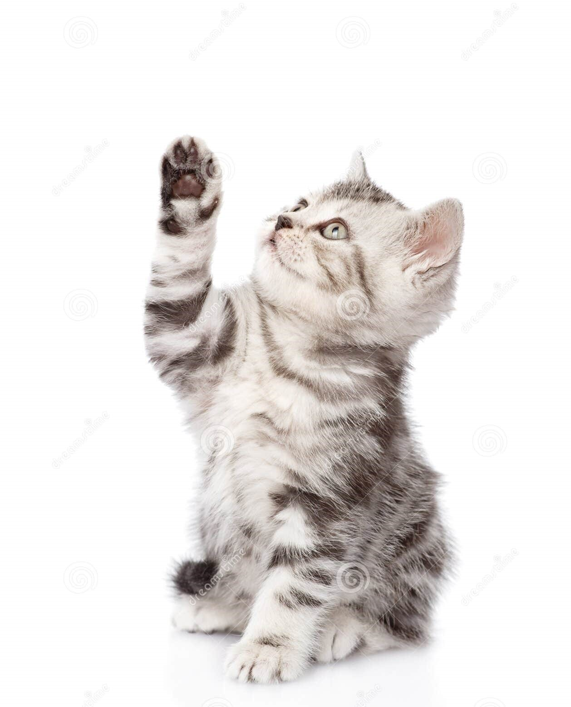
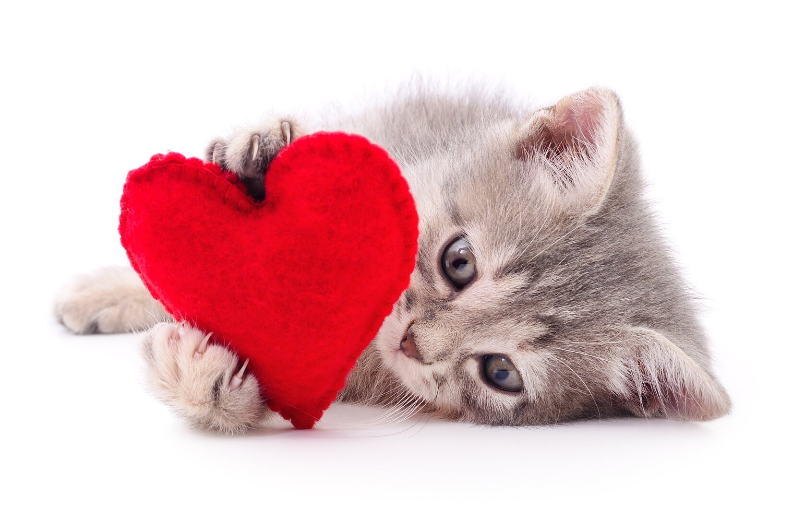

Мама, я желаю тебе в первую очередь крепчайшого здоровья и чтобы тебе всегда и на всё хватало времени, ведь это самые драгоценные ресурсы жизни! Также с этим, хочу тебе пожелать чтобы ты не грустила по пустякам и была всегда оптимистичной. Благополучия, материального и психологического, и просто чтобы ты была счастлива!:D
Спасибо тебе огромное за то, что заботишься обо мне, поддерживаешь меня в трудных ситуациях, тепло одеваешь, готовишь что мне нравится и что мне полезно. За то, что тебе не безразличны мои цели, мечты и амбиции, и всегда сопутствуешь мне в этом! Спасибо что всегда меня хвалишь и доверяешь мне. И самое главное, спасибо тебе за то, что ты есть!
Ну и по традиции твоя любимая песня в этот праздник!:)